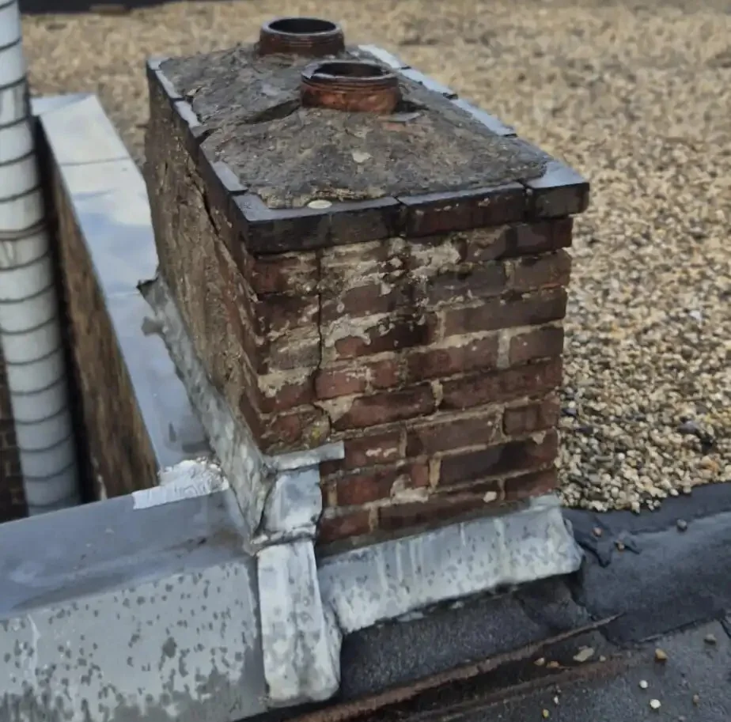
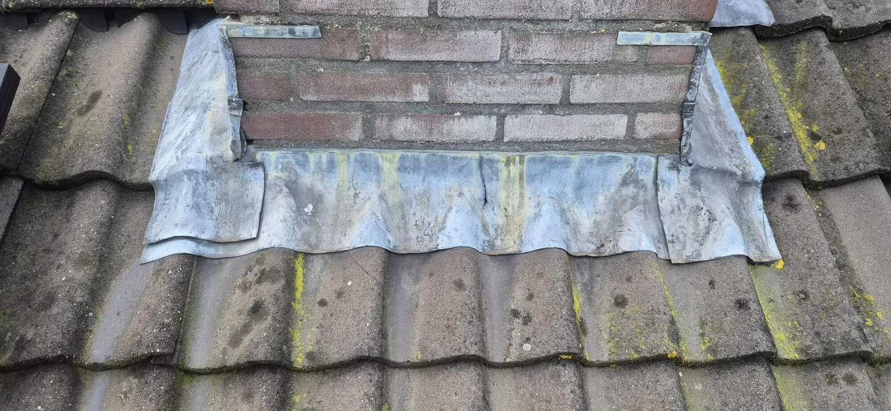
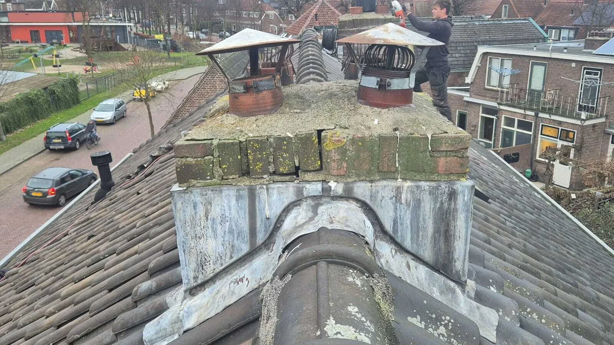
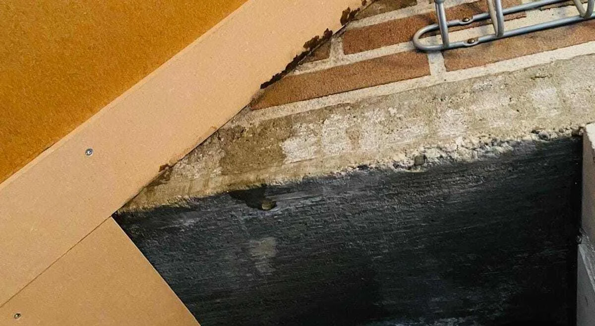
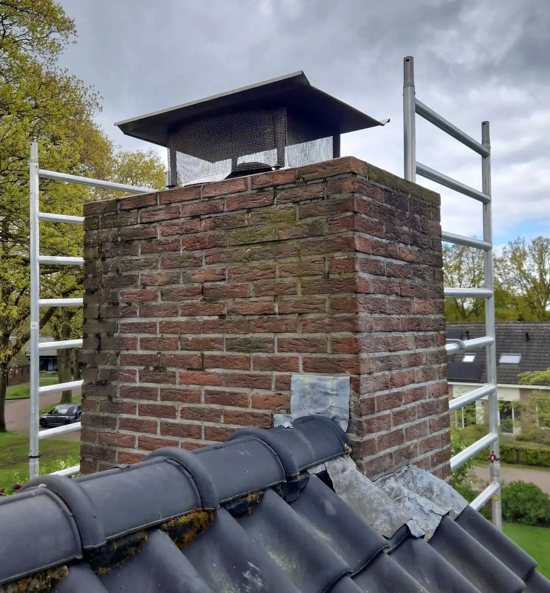
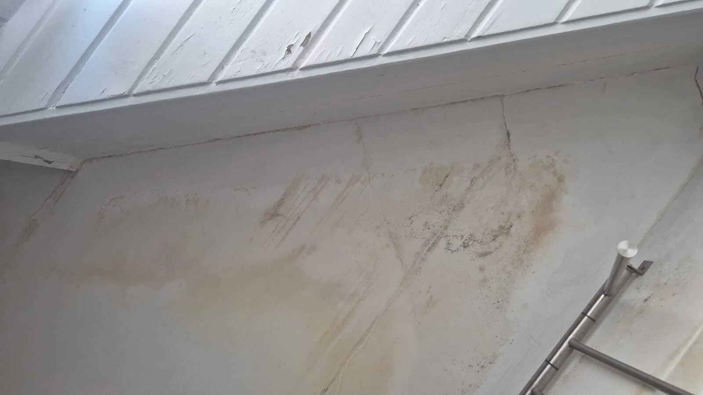
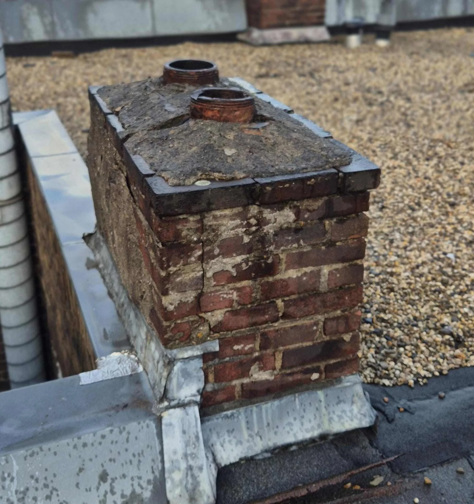

Cluster 5
Schoorsteenrenovatie
Een thematische kennisbanksectie met een pillarpagina en ondersteunende artikelen. Begin bij de hoofdpagina voor overzicht, of kies direct het specifieke onderwerp dat past bij uw situatie.

Artikelen in dit cluster
De pillar pagina geeft het overzicht. De ondersteunende blogs behandelen deelvragen, signalen, kosten, risico's en praktische keuzes.
 Binnenzijde van de schoorsteen: rookkanalen, condens en verborgen schadeOndersteunende blog
Binnenzijde van de schoorsteen: rookkanalen, condens en verborgen schadeOndersteunende blog

Loodwerk rondom de schoorsteen: functie, slijtage en verborgen risico’sOndersteunende blog
Oude schoorsteen behouden of verwijderen: wanneer wat verstandig isOndersteunende blog
Schoorsteen lekkage: hoe ontstaat het en wat zie je in huis?Ondersteunende blog Schoorsteen scheef of instabiel: risico’s en mogelijke oplossingenOndersteunende blog
Schoorsteen scheef of instabiel: risico’s en mogelijke oplossingenOndersteunende blog

Schoorsteenkap: functie, slijtage en veelgemaakte misverstandenOndersteunende blog
Schoorsteenlekkage: waarom water zelden komt waar je het verwachtOndersteunende blog Schoorsteenrenovatie: wanneer nodig?Pillar pagina
Voegwerk van de schoorsteen: wanneer herstellen en wanneer vervangen?Ondersteunende blog